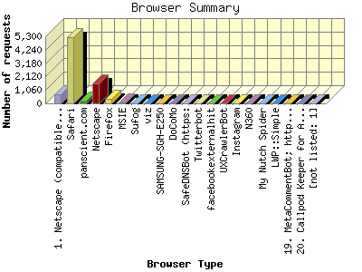

The Browser Summary identifies the most popular web browsers used to visit
this site.
Browsers are broken down by recognized categories such as
Netscape Navigator/Communicator, Microsoft Internet Explorer, WebTV, Opera
and the like. Within each category is also a subgroup by version number
such as 'MSIE 5.0' or 'Netscape 4.5'.
This report shows the first 20 results by requests for pages. This report is sorted by number of requests for pages.

| Browser Type | Number of requests | Number of page requests | |
|---|---|---|---|
| 1. | Netscape (compatible) | 721 | 298 |
| 2. | Safari | 5,231 | 234 |
| Safari/537 | 3,749 | 180 | |
| Safari/601 | 1,051 | 28 | |
| Safari/532 | 17 | 17 | |
| Safari/534 | 271 | 5 | |
| Safari/600 | 91 | 2 | |
| Safari/9537 | 51 | 1 | |
| Safari/536 | 1 | 1 | |
| 3. | panscient.com | 184 | 127 |
| 4. | Netscape | 1,549 | 70 |
| 5. | Firefox | 358 | 52 |
| Firefox/47 | 259 | 11 | |
| Firefox/3 | 9 | 9 | |
| Firefox/31 | 8 | 8 | |
| Firefox/14 | 7 | 7 | |
| Firefox/10 | 4 | 4 | |
| Firefox/32 | 4 | 4 | |
| Firefox/21 | 2 | 2 | |
| Firefox/34 | 2 | 2 | |
| Firefox/45 | 54 | 2 | |
| Firefox/30 | 1 | 1 | |
| 6. | MSIE | 77 | 41 |
| MSIE/9 | 39 | 28 | |
| MSIE/8 | 4 | 3 | |
| MSIE/10 | 3 | 1 | |
| 7. | Sufog | 7 | 7 |
| Sufog/Nutch-2 | 7 | 7 | |
| 8. | viz | 6 | 6 |
| viz/Nutch-1 | 6 | 6 | |
| 9. | SAMSUNG-SGH-E250 | 5 | 5 |
| SAMSUNG-SGH-E250/1 | 5 | 5 | |
| 10. | DoCoMo | 4 | 4 |
| DoCoMo/2 | 4 | 4 | |
| 11. | SafeDNSBot (https: | 4 | 4 |
| SafeDNSBot (https://www | 4 | 4 | |
| 12. | Twitterbot | 3 | 3 |
| Twitterbot/1 | 3 | 3 | |
| 13. | facebookexternalhit | 3 | 1 |
| facebookexternalhit/1 | 3 | 1 | |
| 14. | UXCrawlerBot | 1 | 1 |
| 15. | 1 | 1 | |
| Instagram/2 | 1 | 1 | |
| 16. | N360 | 1 | 1 |
| N360/6 | 1 | 1 | |
| 17. | My Nutch Spider | 1 | 1 |
| My Nutch Spider/Nutch-1 | 1 | 1 | |
| 18. | LWP::Simple | 1 | 1 |
| LWP::Simple/6 | 1 | 1 | |
| 19. | MetaCommentBot; http: | 1 | 1 |
| MetaCommentBot; http://metacomment | 1 | 1 | |
| 20. | Callpod Keeper for Android 1.0 (10.1.0 | 1 | 1 |
| Callpod Keeper for Android 1.0 (10.1.0/239) | 1 | 1 | |
| [not listed: 1] | 4 | 0 | |
This report was generated on July 19, 2016 21:20.
Report time frame June 18, 2016 00:31 to June 29, 2016 23:52.
| Web statistics report produced by: analog 6.0 / Report Magic 2.21 |